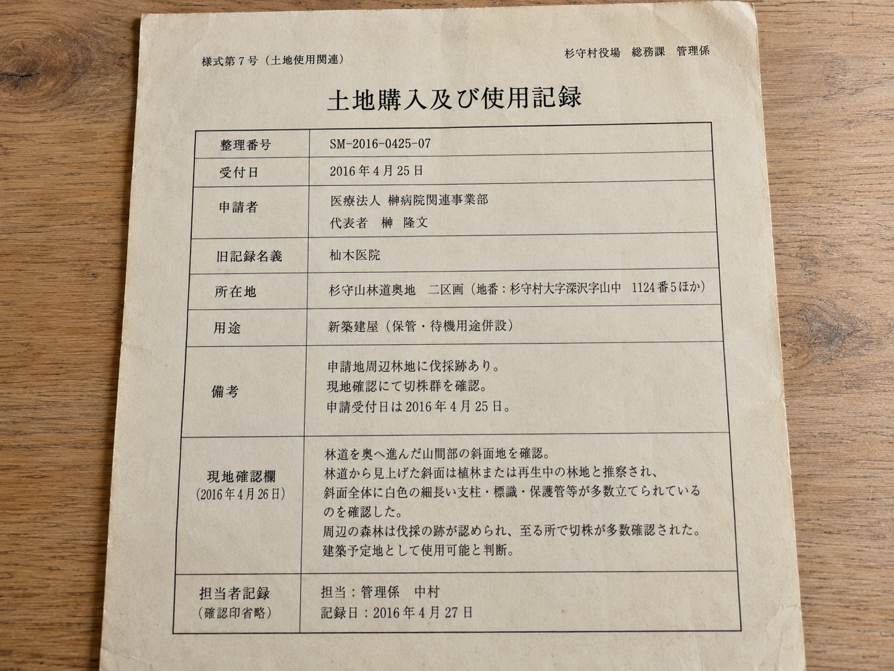

Public Record
杉守村土地購入及び使用記録
村内における土地取得および用途申請に関する記録のうち、公開対象部分を掲載しています。
資料概要
本資料は、2016年度以降の村内対象地について、申請者名義、用途区分、使用開始時期などを確認するための公開資料です。
原本は村役場保管資料として管理しています。
記録内容
| 申請者 | 榊病院関連法人 |
|---|---|
| 旧記録名義 | 杣木医院 管理法人 |
| 申請受付日 | 2016年4月25日 |
| 用途 | 新築建屋（保管・待機用途併設） |
| 所在地 | 杉守山 林道奥地 |
| 購入・使用開始 | 2016年度 |
| 関連施設 | 杣木医院 / 榊病院 |
| 現地備考 | 対象地周辺に伐採跡あり。周辺林地の一部に切株群を確認。 |
| 備考 | 2016年度記録に追記あり。旧管理記録の一部は村役場保管資料を参照。 |
※ 本ページに掲載している情報は公開対象部分のみです。詳細な契約書類、測量図、添付原本の一部は窓口閲覧資料として管理されています。
添付資料（閲覧用写し）
添付ファイル
杉守村土地購入及び使用記録（閲覧用写し）
形式：JPEG / 公開資料写し / 1点

土地購入及び使用記録の閲覧用写し。原本を撮影または複写した公開用資料として掲載しています。
画像が表示されない場合は、ファイル名が sugimori_land_record.jpg になっているか確認してください。